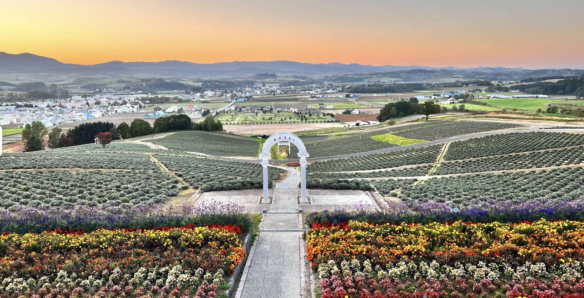
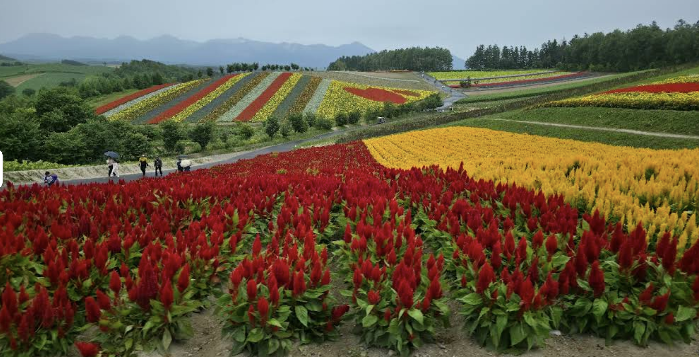
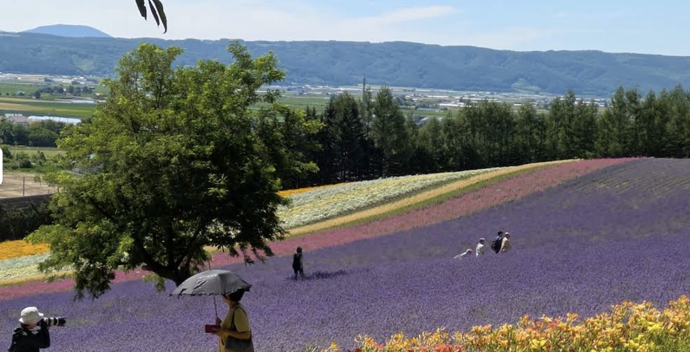
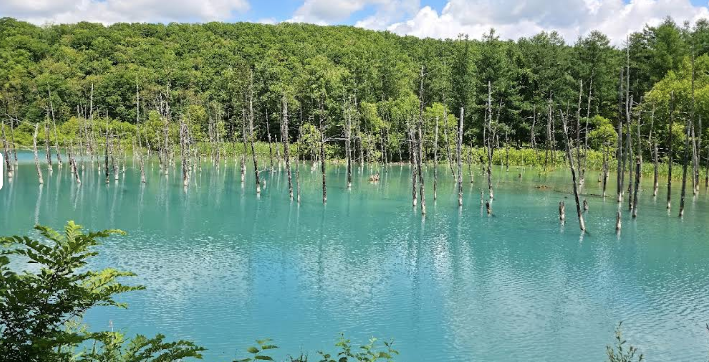

Day 1
6/22（週一）出發！
桃園 → 新千歲機場 → 富良野
06:20
✈️ 桃園出發 IT234
記得帶飯糰放背包，機上解決早餐～
11:05
🛬 抵達新千歲機場
機場 2 樓的 LAWSON 便利超商買食物果腹（炸雞 + 御飯糰）
14:30 — 15:30
🌸 第一站：中富良野．日之出公園
360度俯瞰整個富良野盆地與十勝岳連峰，還有超可愛的寶可夢人孔蓋！

15:45 — 17:15
🌻 第二站：四季彩之丘
500日圓花田維護協力金 + 500日圓停車費
必吃：美瑛在地牛乳霜淇淋、熱騰騰的男爵馬鈴薯可樂餅、白玉米
必吃：美瑛在地牛乳霜淇淋、熱騰騰的男爵馬鈴薯可樂餅、白玉米

18:30
🍽 富良野市 晚餐
晚餐後逛超市採買：水果、糧食、啤酒、明日早餐（麵包、飯糰）
📌 小提醒
飯糰記得出發前買好放背包，免得機上餓肚子。超市採買建議早點去，越晚越容易搶空！
Day 2
6/23（週二）花海全攻略
富田農場 → 白金青池 → 美瑛
06:00 — 08:00
💜 富田農場（Farm Tomita）
06:00–07:00 前半場：傳統薰衣草田
站展望台由上往下朝西拍，柔和側逆光穿透花瓣邊緣，金黃滾邊超夢幻！
07:00–08:00 後半場：彩色花田
罌粟花、魯冰花、萬壽菊七彩全照亮，坡腳由下往上拍，或用長焦橫向裁切花海的幾何感，飽和度最漂亮
站展望台由上往下朝西拍，柔和側逆光穿透花瓣邊緣，金黃滾邊超夢幻！
07:00–08:00 後半場：彩色花田
罌粟花、魯冰花、萬壽菊七彩全照亮，坡腳由下往上拍，或用長焦橫向裁切花海的幾何感，飽和度最漂亮

08:30 — 09:15
🔵 白金青池
此時大順光，池水最藍最夢幻！
⚠️ 停車注意：停車場500日圓，注意別誤入前方大型停車場（費用高達2000日圓！）
⚠️ 停車注意：停車場500日圓，注意別誤入前方大型停車場（費用高達2000日圓！）



📌 拍照攻略重點
青池停車場要認清楚！前方大型停車場是2000日圓，正確那個才500日圓，注意路標別走錯入口喔。
Day 3
6/24（週三）往小樽
還車 → 札幌 → 小樽
08:00
🏡 民宿 Check Out，出發回札幌
途中經過砂川服務區，冰淇淋超好吃，強烈建議停下來吃！
10:00 — 10:30
🚗 還車
11:00 — 12:00
🚌 搭公車到小樽（約一小時）
12:00 抵達
🏨 抵達小樽，先到 Hostel 寄放行李
下午自由活動 — 可以揪大家一起，也可以自由探索！
🍜 午餐自由選擇
-
Mahoro 拉麵
-
Chinese Restaurant Keien 中華料理

-
Menya Unga 拉麵


🥠 點心推薦
-
雞蛋糕 正福屋

🍦 甜點 / 下午茶推薦
-
Ryugetsu Co. 柳月

-
六花亭 小樽運河店

15:00 起
🏡 Check In — Garden House Umenoya Otaru
雙人房（附衛浴）
📌 備注
今天行程比較鬆，大家按自己步調逛小樽運河、玻璃工藝街等，晚上可以再集合！
Day 4
6/25（週四）札幌自由日
小樽 → 札幌
早餐
🍳 民宿附餐
享用民宿早餐後，前往飯店寄放行李
全天
🏙 札幌自由活動
大通公園、狸小路、薄野等都在步行範圍內，可以各自行動或一起！
🏨 今晚住宿
住宿：札幌市區飯店
📌 備注
今天完全自由行！大家可以各自安排，有需要集合再說～
Day 5
6/26（週六）回家囉
札幌 → 新千歲 → 桃園
07:00 起
🍳 住宿 Buffet 自助餐
早餐 07:00 開始，記得早起吃飽再出發！
12:05
✈️ IT235 回程班機
記得預留充足時間前往新千歲機場報到～
📌 最後提醒
記得預留時間辦理退稅、逛機場免稅店，還有把剩餘日圓用掉！平安回家 🎉